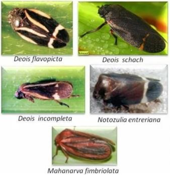
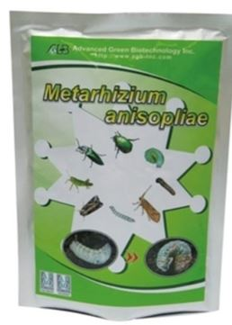

Espécies de Cigarrinha
Fases da Cigarrinha
Ovo:
Em ambiente seco ou frio, caso do outono e inverno na região, os ovos ficam paralisados indo a eclodir somente sob condições favoráveis de umidade e calor na primavera/verão.
Ninfa:
Após a eclosão o estádio de ninfa se desenvolve por um período de 25 a 35 dias. As ninfas ficam envoltas em uma secreção de uma espuma gosmenta e esbranquiçada que as protege do sol, dos inimigos naturais e mantém a unidade ao redor do inseto.
O estágio ninfal é o que causa maiores danos a pastagem, pois as ninfas alojadas próximas ao solo, sugam a seiva da planta, causando aqueles sintomas. As ninfas ao sugarem a planta, além de retirar a seiva e enfraquecer a planta, podem ser vetores de viroses, como por exemplo o vírus do mosaico, e também porta de entrada para outros patógenos.
Adulta:
Ao se transformarem em insetos adultos, habitam as folhas e colmos da pastagem e se deslocam com voos curtos, saltitando entre as plantas. O inseto adulto tem uma duração de 10 a 20 dias, com as fêmeas mais longevas que os machos. Nas condições regionais é comum duas a três infestações durante a primavera/verão, mas é possível em anos muito úmidos e quentes se ter mais de três.
Tipos de Controle
Biológico
Consiste em aplicar o fungo Metarhizium Anisopliae que tem como principal objetivo atacar as Ninfas. Produto não é tóxico e não é necessária a retirada dos animais.
Para que o fungo funcione eficientemente é necessário aplicá-lo com uma boa condição de umidade e preferencialmente ao final do dia, para reduzir a exposição do fungo ao sol.
Quando a pastagem nunca recebeu o Metarhizium, muitas vezes é necessário duas a três aplicações, para que ocorra a inoculação da pastagem e desta forma prevenir futura infestação
Químico
O uso de inseticida tem por objetivo atacar os animais adultos e precisa ser retirado os animais pelo período de carência. Deve ser aplicado novamente num intervalo de 5 a 7 dias. Após a aplicação do inseticida, recomenda-se fazer adubação nitrogenada para recuperar rapidamente as plantas e a aplicação do fungo após 14 dias.


Adubação, Manejo da Pastagem e Espécies De Forrageiras Resistentes
Além do calor e umidade, fatores como espécie forrageira suscetível, plantas forrageiras debilitadas por falta de adubação, altura excessiva da pastagem e a presença de material morto, resultado da altura excessiva ou da falta de adubação, facilitam o ataque da praga.
Quando Controlar?

Comentários
Uma das práticas para evitar grandes danos é utilizar vários tipos de forrageira, com alta resistência e baixa resistência. No nosso caso, o Capiaçu é de baixa resistência e os atauqes devem acontecer sempre nele. Também pensei em plantar a braquiarinha em locais que estão sem plantio para "atrair" as cigarrinhas.